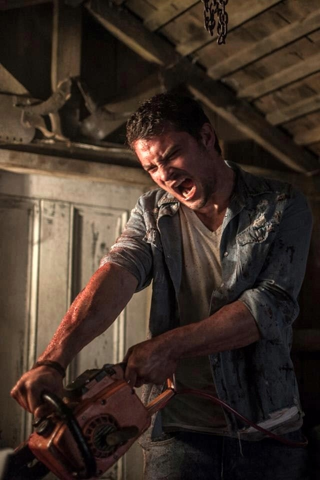
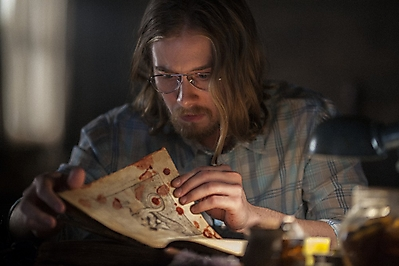

Main Characters

Jane Levy
In "Evil Dead," Fede Alvarez's remake of Sam Raimi's cult classic, Jane Levy plays heroin addict, Mia.
As Mia begins to experience the consequences, her friends assume she's going through heroin withdrawal.
Levy has been making a name for herself in comedy, starring as sharp-witted Tessa Altman in the ABC television
series "Suburgatory" as well as taking on film roles in "Fun Size" and "Nobody Walks" last year.
But "Evil Dead" is
Levy's first foray into the world of horror, and the actress said nothing could have prepared for her the intensity of the experience of shooting the film.

Shiloh Fernandez
Shiloh Fernandez plays the brother of Mia, David. Trying to help out his sister, he goes series of tradegies.
Fernandez is an American actor. He, also, played in the series "Jericho" and "United Staters of Tara",
and the films "Deadgirl", "Red Riding Hood", and the 2013 remake of "Evil Dead".

Lou Taylor Pucci
Lou Taylor Pucci plays a friend of family, Eric. In the movie, he opens a mysterious book from the basement of the cabin and recites words.
The words awaken an ancient demon that posseses Mia.
Pucci is an American actor who first appeared on film in Rebecca Miller's well-received "Personal Velocity: Three Portraits" in 2002.
Pucci had his breakthrough leading role in the critically acclaimed "Thumbsucker" (2005),
for which he won a Special Jury Prize at the Sundance Film Festival.
Pucci went on to star in a multitude of indie films, including "The Chumscrubber" (2005),
"Fast Food Nation" (2006), "The Go-Getter" (2007), "Explicit Ills" (2008), and "Carriers" (2009).
Most recently, Pucci had starring roles in the 2013 "Evil Dead" remake, as well as "The Story of Luke" (2013) and "Spring" (2014).